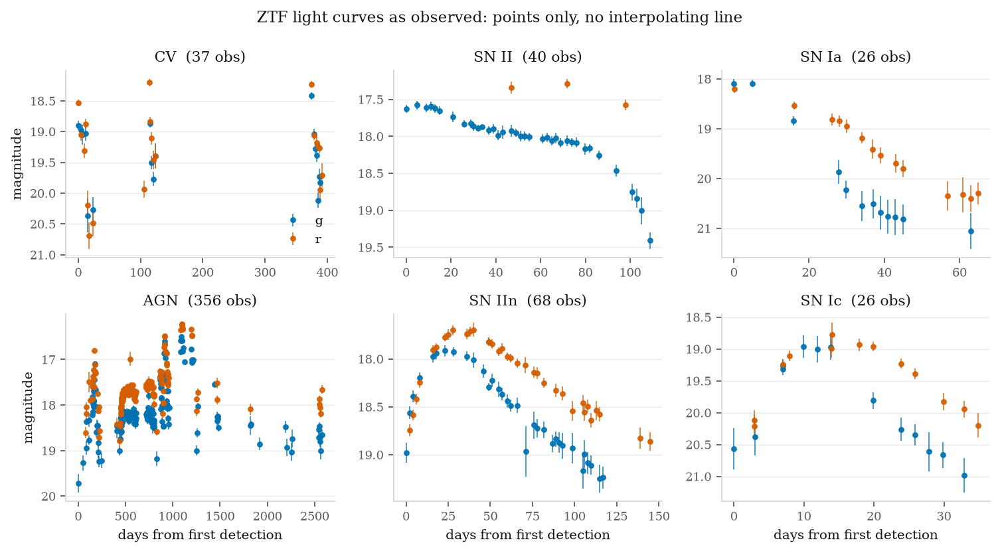
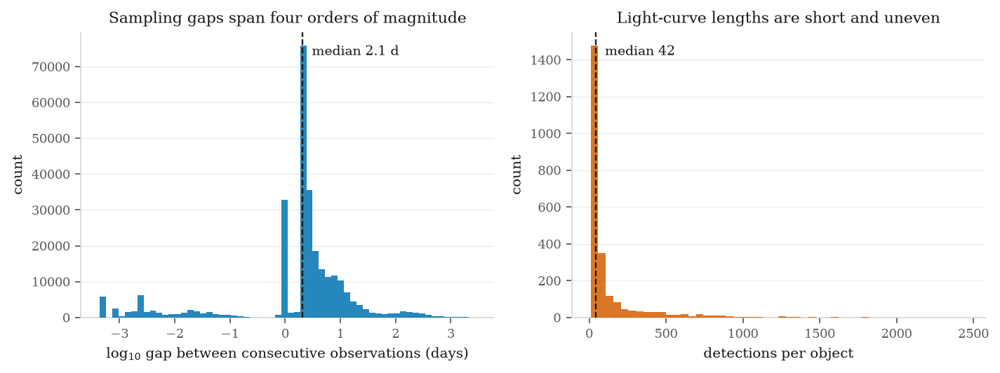
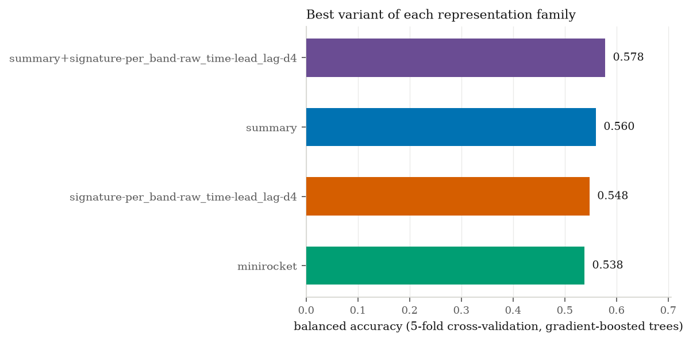
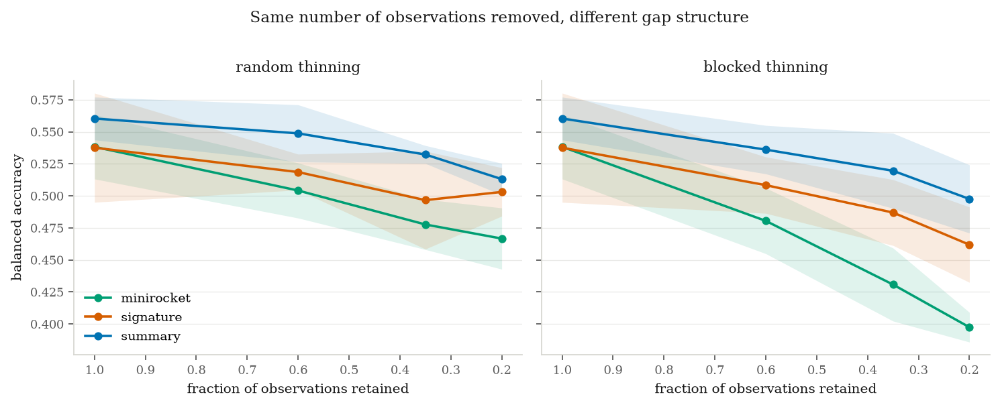

T1 · Technical report
A photometric light curve is a sampled path, not a vector. The signature transform of rough path theory consumes the raw $(t, m, \sigma, \text{band})$ stream with no interpolation and is invariant under reparameterisation of time. On 2,375 spectroscopically classified ZTF transients in eight classes, signatures lose to a 49-feature hand-crafted baseline (0.547 against 0.562 balanced accuracy) while using fourteen times as many features — but concatenated with it they reach 0.577, and a matched-noise control establishes that the gain is information rather than model capacity. A synthetic control locates the mechanism at truncation depth 3 rather than the predicted depth 2, for a reason that generalises to every time-augmented signature. A sampling ablation confirms the premise the track rests on and refutes the specific prediction made from it.
Observations arrive at times set by weather and scheduling, in whichever filter the telescope was using, with per-point uncertainties varying by an order of magnitude. Nearly every machine-learning pipeline begins by destroying that structure — interpolating onto a regular grid, binning to fixed cadence, or fitting a Gaussian process and resampling — so that a convolutional or recurrent architecture can accept the result.
The signature of a path $X:[0,T]\to\mathbb{R}^d$ is the sequence of its iterated integrals, $S(X)=\left(1,\int dX,\iint dX\otimes dX,\dots\right)$, with the $k$-th term in $(\mathbb{R}^d)^{\otimes k}$. It is invariant under increasing reparameterisation, faithful up to tree-like equivalence, and universal in the sense that linear functionals of it approximate continuous functions on path space. It accepts the raw stream directly.
Prior art, stated plainly. Signatures have one published astronomical application: SigNova (arXiv:2402.14892), which detects radio-frequency interference in interferometric visibility streams. No application to photometric light curves, transient classification, broker feature sets or gravitational-wave strain was found in a targeted audit. The gap is narrow, which is what makes it worth attempting — and SigNova establishes that the representation survives real radio-astronomical noise.
Labels are the spectroscopic classifications of the ZTF Bright Transient Survey; per-epoch photometry in $g$ and $r$ comes from the ALeRCE broker. ALeRCE's own machine classifications are never used — training on one classifier's output and reporting agreement with it measures nothing. After quality cuts requiring at least ten detections and three per band, the sample is 2,375 objects with a median of 42 detections over 122 days: CV (456), SN II (426), SN Ia (406), AGN (376), SN IIn (273), SN Ic (185), SN Ib (148), SLSN-I (105).
A selection effect that had to be fixed first. The first fetch submitted objects grouped by class while the broker's failure rate rose during the run, so classes submitted last lost far more objects than those submitted first — SN Ib was eliminated entirely. That is a selection effect on the label, not random attrition, and it would have corrupted every downstream number. After shuffling before any network call, lowering concurrency and adding exponential backoff, the per-class retrieval rate is 1.0 across all eight classes.


The transform is implemented from scratch: each straight segment contributes the tensor
exponential of its increment, and segments combine by Chen's identity. It is written rather
than imported because the theory track needs per-level access and because
iisignature does not build on Python 3.12. Correctness is established against
three independent libraries — esig, signax and
roughpy — to $10^{-13}$, plus four structural identities: reparameterisation
invariance, level 1 equalling the total increment, the shuffle identity
$S_1S_2 = S_{12}+S_{21}$, and the vanishing signature of a path concatenated with its own
reversal. All sixteen checks pass.
The hard part is not the signature but deciding what the path is. Observations in different filters are not simultaneous, so no instant exists at which a two-band vector is defined. Three constructions are implemented and compared rather than assumed: per-band (each filter its own path, signatures concatenated, no interpolation anywhere), interleaved (one path with a band-indicator channel), and joint forward-fill (a common time axis with the last magnitude carried forward — which is piecewise-constant interpolation, and is labelled as such).
Every representation is evaluated on identical folds with identical classifiers. The
hand-crafted baseline implements the FATS/feets lineage from scratch; almost
all its features are functions of the marginal magnitude distribution and so are invariant
to permuting observations in time, which is exactly the information signatures retain. The
three ordering-sensitive features it does contain are included deliberately — omitting them
would make the comparison dishonest. MiniRocket receives linearly interpolated fixed-length
input, its best case; that interpolation is precisely the cost the signature approach claims
to avoid.
Before touching real data, the claimed mechanism was isolated. Two classes of synthetic double-peaked light curve differ only in which peak comes first: identical marginal magnitude distributions, identical net change, opposite ordering. The prediction registered in advance was that separation would appear at depth 2, the Lévy area being the classical order-sensitive term.
| Representation | Balanced accuracy |
|---|---|
| Order-blind summary features | 0.512 |
| Signature depth 1 | 0.524 |
| Signature depth 2 | 0.489 |
| Signature depth 3 | 0.978 |
| Signature depth 4 | 0.990 |
It does not. Depths 1 and 2 sit at chance; separation appears at depth 3. With channels $(t,m)$ the time coordinate is strictly increasing, so the antisymmetric part of level 2 — the Lévy area — reduces to $\int m\,dt$ once the boundary terms vanish. That is the area under the light curve, identical whichever peak came first. A path monotone in one coordinate encloses no signed area that ordering can change.
This generalises beyond the experiment: every time-augmented signature of a time series has a monotone time channel, since that is what time augmentation means. Truncating at depth 2 to economise on features would discard exactly the information the method exists to supply, and the resulting null result would have been blamed on the astrophysics.
| Representation | Features | Balanced accuracy |
|---|---|---|
| summary + signature (lead-lag, depth 4) | 729 | 0.578 |
| summary (hand-crafted) | 49 | 0.560 |
| signature, per-band, raw time, lead-lag, depth 4 | 680 | 0.548 |
| MiniRocket (interpolated grid) | 9,996 | 0.538 |
| signature, per-band, raw time, depth 4 | 60 | 0.524 |
| signature, per-band, unit time, depth 4 | 60 | 0.455 |
Preprocessing dominated the representation. Scaling time to $[0,1]$ costs 0.069,
because it discards the duration of the event, which the baseline keeps as
t_span. The first version of this pipeline did exactly that and would have
reported a far worse number as a property of signatures rather than of the preprocessing.
The lead-lag transform is worth a further 0.025, taking signatures past MiniRocket but not
past the incumbent.
An implementation check hidden in the numbers. The raw and raw time preparations score identically to four decimal places. This is not coincidence: the signature depends only on increments, so a constant magnitude offset cannot change it. Absolute brightness can enter only through a basepoint, and introduced that way it makes things worse.

The concatenation beats the baseline by 0.015 against a fold spread of 0.020, which on its own establishes nothing. The question was given a dedicated test: 50 paired folds on identical splits, a Wilcoxon signed-rank test, a bootstrap interval, and — the part that decides it — a control replacing the signature block with Gaussian noise of identical shape and column variance.
| Feature block | Balanced accuracy | vs. summary | Folds improved |
|---|---|---|---|
| summary + signature | 0.5769 ± 0.0200 | +0.0147 | 38 / 50 |
| summary | 0.5623 ± 0.0167 | — | — |
| signature alone | 0.5473 ± 0.0218 | −0.0150 | — |
| summary + matched noise | 0.5278 ± 0.0146 | −0.0345 | 1 / 50 |
The control is what makes this readable. A gradient-boosted ensemble handed 680 extra candidate splits might improve for reasons unrelated to their contents; it does not. Noise costs 0.0345 while the same number of signature columns gain 0.0147, under identical folds. Bootstrap intervals are $[+0.0078, +0.0212]$ and $[-0.0396, -0.0297]$.
Caveat beside the $p$-value ($9.5\times10^{-5}$): repeated cross-validation folds reuse the same 2,375 objects and are not independent, so both it and the bootstrap interval are optimistic as formal inference. The comparison that does not rest on that assumption is the one against the noise control, and it is the one the conclusion leans on.
Light curves were thinned to fixed retained fractions under two regimes removing the same number of observations while destroying different structure: random thinning (independent drops) and blocked thinning (contiguous runs, imitating weather outages and seasonal windows).

The informative quantity is the difference between regimes at matched density — the cost of gap structure with gap count held fixed:
| Retained fraction | summary | signature | MiniRocket |
|---|---|---|---|
| 0.60 | −0.013 | −0.010 | −0.024 |
| 0.35 | −0.013 | −0.010 | −0.047 |
| 0.20 | −0.016 | −0.041 | −0.069 |
cd projects/t1-signature-lightcurves
python3 src/verify_signature.py # 16/16 checks against esig, signax, roughpy
python3 src/order_sensitivity.py # synthetic control: ordering appears at depth 3
python3 src/fetch_ztf_bts.py # BTS labels + ALeRCE photometry, cached
python3 src/run_benchmark.py # head-to-head comparison
python3 src/test_complementarity.py # 50 paired folds + matched-noise control
python3 src/ablate_sampling.py # random vs blocked thinning
python3 src/make_figures.py # figures 1-4